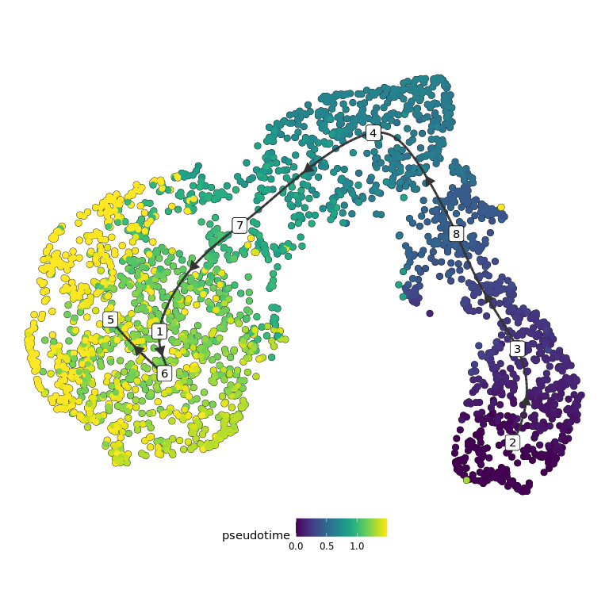

Sample 2020_18 and 2020_23
Tumor cells trajectory using TInGa
Audrey
2022-12-14
This script is used to infer trajectory on tumor cells, using TInGa.
Set environment
library(patchwork)
library(ggplot2)
library(dplyr)We load the parameters :
out_dir = params$out_dirWe load the Seurat object containing all tumor cells from both datasets :
sample_name = "donor18_recipient23"
sobj = readRDS(paste0(out_dir, "/", sample_name, "_sobj_tumor_cells.rds"))
sobj## An object of class Seurat
## 19179 features across 2556 samples within 2 assays
## Active assay: RNA (17179 features, 0 variable features)
## 1 other assay present: mnn.reconstructed
## 2 dimensional reductions calculated: mnn, mnn_umapThis are the settings :
load(paste0(out_dir, "/", sample_name, "_sample_info.rda"))
traj_dimred = "mnn"
traj_umap = "mnn_umap"
seed = 1337L
traj_max_dims = 50Trajectory inference
Where is the root ?
root_cell_id = names(which.max(sobj$root_score))
sobj$is_root = colnames(sobj) == root_cell_id
sobj$cell_name = colnames(sobj)
root_plot = aquarius::plot_label_dimplot(sobj, reduction = traj_umap,
col_by = "is_root", col_color = c("gray80", "red"),
label_by = "cell_name", label_val = root_cell_id) +
ggplot2::ggtitle("Root cell") +
ggplot2::theme(plot.title = element_text(hjust = 0.5),
aspect.ratio = 1) +
Seurat::NoLegend() + Seurat::NoAxes()
sobj$is_root = NULL
sobj$cell_name = NULL
root_plot
Now, we perform the trajectory inference :
set.seed(seed)
my_traj = aquarius::traj_tinga(sobj,
seed = seed,
expression_assay = "RNA",
expression_slot = "data",
count_assay = "RNA",
count_slot = "counts",
dimred_name = traj_dimred,
dimred_max_dim = traj_max_dims,
root_cell_id = root_cell_id,
tinga_parameters = list(max_nodes = 8))
## Add pseudotime
sobj$pseudotime = my_traj$pseudotimeWe can visualize pseudotime :
Seurat::FeaturePlot(sobj, features = "pseudotime",
reduction = traj_umap,
cols = viridis::viridis(n = 100)) +
ggplot2::ggtitle("Pseudotime") +
ggplot2::theme(plot.title = element_text(hjust = 0.5, face = "bold"),
axis.ticks = element_blank(),
axis.text = element_blank(),
axis.title = element_blank(),
aspect.ratio = 1)
We can generate the figure :
## Make some plots
# Colored title
# https://stackoverflow.com/questions/55874998/replace-nth-occurrence-of-a-character-in-a-string-with-something-else
# https://stackoverflow.com/questions/49735290/ggplot2-color-individual-words-in-title-to-match-colors-of-groups
samples_of_interest = unique(sobj$orig.ident)
mytitle = sapply(samples_of_interest, FUN = function(one_sample) {
one_color = sample_info[sample_info$sample_identifiant == one_sample, "color"]
new_char = paste0("<span style='color:", one_color,
";'>", one_sample, "</span>")
return(new_char)
})
if (length(mytitle) > 7) {
every4 = seq(from = 1, to = length(mytitle), by = 5)
every4 = every4[-1]
for (elem in every4) {
mytitle[elem] = paste0("<br>", mytitle[elem])
}
}
mytitle = paste(mytitle, collapse = ", ")
# mytitle = gsub("((?:[^,]+, ){3}[^ ]+),", "\\1\n", mytitle)
# Trajectory on UMAP
p1 = dynplot::plot_dimred(trajectory = my_traj,
label_milestones = TRUE,
plot_trajectory = TRUE,
dimred = sobj[[traj_umap]]@cell.embeddings,
color_cells = 'pseudotime', color_trajectory = "none")
# Gene of interest
p2 = Seurat::FeaturePlot(sobj,
features = c("dtTomato", "Sox10", "Kcna1",
"Plp1", "Erbb3", "S100b", "Cd59a",
"Acta2", "Nes", "Mif", "Lgals1",
"Crabp1", "Pdgfra", "Dcn", "Mgp",
"Sox9", "Birc5", "percent.mt", "percent.rb"),
reduction = traj_umap, combine = FALSE)
p2 = lapply(p2, FUN = function(my_plot) {
my_plot = my_plot +
ggplot2::theme(aspect.ratio = 1,
axis.ticks = element_blank(),
axis.text = element_blank(),
axis.title = element_blank()) +
Seurat::NoLegend()
return(my_plot)
})
# Sample of origin
p3 = Seurat::DimPlot(sobj, reduction = traj_umap,
group.by = "orig.ident") +
ggplot2::scale_color_manual(values = sample_info$color,
breaks = sample_info$sample_identifiant) +
ggplot2::ggtitle(mytitle) +
ggplot2::theme(plot.title = ggtext::element_markdown(hjust = 0.5,
face = "bold",
size = 12),
axis.ticks = element_blank(),
axis.text = element_blank(),
axis.title = element_blank(),
aspect.ratio = 1) +
Seurat::NoLegend()
# Patchwork
p2[[length(p2) + 1]] = patchwork::guide_area()
p2[[length(p2) + 1]] = root_plot
p2[[length(p2) + 1]] = p1
p2[[length(p2) + 1]] = p3
p2 = p2[c(length(p2) - 3, # guide_area
length(p2) - 1, # p1 : trajectory
length(p2), # p3 : sample of origin
length(p2) - 2, # root_plot
1:(length(p2) - 4))] # all features
mylayout = "
#AA#CCCC
BBBBCCCC
BBBBCCCC
BBBBCCCC
DDEEFFGG
DDEEFFGG
HHIIJJKK
HHIIJJKK
LLMMNNOO
LLMMNNOO
PPQQRRSS
PPQQRRSS
TTUUVVWW
TTUUVVWW
"
p = patchwork::wrap_plots(p2) +
patchwork::plot_layout(design = mylayout,
guide = "collect") &
ggplot2::theme(legend.direction = "horizontal")In order to save the dataset, we create a list containing everything :
output = list(traj_umap = traj_umap,
traj_dimred = traj_dimred,
root_plot = root_plot,
my_traj = my_traj,
sobj = sobj,
p1 = p1, p2 = p2,
p3 = p3, p = p)We can visualize the main figure :
output$p
We can zoom on the pseudotime figure :
output$p1
Where are cells from each dataset ?
# Build plots
plot_list = aquarius::plot_split_dimred(sobj = sobj,
reduction = traj_umap,
split_by = "orig.ident",
split_color = sample_info %>%
dplyr::arrange(sample_identifiant) %>%
dplyr::pull(color),
group_by = "orig.ident",
group_color = rep("black", length(unique(sobj$orig.ident))),
bg_pt_size = 0.25,
main_pt_size = 0.25)
plot_list = lapply(plot_list, FUN = function(one_plot) {
plot_title = as.character(one_plot$labels$title)
nb_cells = sum(sobj$orig.ident == plot_title)
one_plot = one_plot +
ggplot2::labs(subtitle = paste0(nb_cells, " cells")) +
ggplot2::theme(aspect.ratio = 1,
plot.title = element_text(hjust = 0.5, face = "bold", size = 15),
plot.subtitle = element_text(hjust = 0.5, face = "bold", size = 12)) +
Seurat::NoLegend()
})
# Patchwork
patchwork::wrap_plots(plot_list, nrow = 1)We save it !
saveRDS(output, file = paste0(out_dir, "/trajectory_output_tinga.rds"))
names(output)## [1] "traj_umap" "traj_dimred" "root_plot" "my_traj" "sobj"
## [6] "p1" "p2" "p3" "p"R Session
show
## R version 3.6.3 (2020-02-29)
## Platform: x86_64-pc-linux-gnu (64-bit)
## Running under: Ubuntu 20.04.5 LTS
##
## Matrix products: default
## BLAS: /usr/local/lib/R/lib/libRblas.so
## LAPACK: /usr/local/lib/R/lib/libRlapack.so
##
## locale:
## [1] C
##
## attached base packages:
## [1] stats graphics grDevices utils datasets methods base
##
## other attached packages:
## [1] dynutils_1.0.5.9000 dynwrap_1.2.1 purrr_0.3.4
## [4] tidyr_1.1.4 Seurat_3.1.5 dplyr_1.0.7
## [7] ggplot2_3.3.5 patchwork_1.0.1.9000
##
## loaded via a namespace (and not attached):
## [1] softImpute_1.4 graphlayouts_0.7.0
## [3] pbapply_1.4-2 lattice_0.20-41
## [5] haven_2.3.1 dyndimred_1.0.3
## [7] vctrs_0.3.8 usethis_2.0.1
## [9] blob_1.2.1 survival_3.2-13
## [11] prodlim_2019.11.13 DBI_1.1.1
## [13] R.utils_2.11.0 SingleCellExperiment_1.8.0
## [15] rappdirs_0.3.3 uwot_0.1.8
## [17] dqrng_0.2.1 gng_0.1.0
## [19] jpeg_0.1-8.1 zlibbioc_1.32.0
## [21] pspline_1.0-18 pcaMethods_1.78.0
## [23] mvtnorm_1.1-1 htmlwidgets_1.5.4
## [25] GlobalOptions_0.1.2 future_1.22.1
## [27] UpSetR_1.4.0 laeken_0.5.2
## [29] leiden_0.3.3 clustree_0.4.3
## [31] lmds_0.1.0 parallel_3.6.3
## [33] scater_1.14.6 irlba_2.3.3
## [35] markdown_1.1 DEoptimR_1.0-9
## [37] tidygraph_1.1.2 Rcpp_1.0.9
## [39] readr_2.0.2 KernSmooth_2.23-17
## [41] carrier_0.1.0 gdata_2.18.0
## [43] DelayedArray_0.12.3 limma_3.42.2
## [45] pkgload_1.2.2 RcppParallel_5.1.4
## [47] Hmisc_4.4-0 fs_1.5.2
## [49] RSpectra_0.16-0 fastmatch_1.1-0
## [51] ranger_0.12.1 digest_0.6.25
## [53] png_0.1-7 sctransform_0.2.1
## [55] cowplot_1.0.0 DOSE_3.12.0
## [57] TInGa_0.0.0.9000 dynplot_1.0.2.9000
## [59] ggraph_2.0.3 pkgconfig_2.0.3
## [61] GO.db_3.10.0 DelayedMatrixStats_1.8.0
## [63] gower_0.2.1 ggbeeswarm_0.6.0
## [65] iterators_1.0.12 DropletUtils_1.6.1
## [67] reticulate_1.26 clusterProfiler_3.14.3
## [69] SummarizedExperiment_1.16.1 circlize_0.4.16
## [71] beeswarm_0.4.0 GetoptLong_1.0.5
## [73] xfun_0.35 bslib_0.3.1
## [75] zoo_1.8-10 tidyselect_1.1.0
## [77] GA_3.2 reshape2_1.4.4
## [79] ica_1.0-2 pcaPP_1.9-73
## [81] viridisLite_0.3.0 rtracklayer_1.46.0
## [83] rlang_1.0.2 hexbin_1.28.1
## [85] jquerylib_0.1.4 dyneval_0.9.9
## [87] glue_1.4.2 waldo_0.3.1
## [89] RColorBrewer_1.1-2 matrixStats_0.56.0
## [91] stringr_1.4.0 lava_1.6.7
## [93] europepmc_0.3 DESeq2_1.26.0
## [95] recipes_0.1.17 labeling_0.3
## [97] class_7.3-17 BiocNeighbors_1.4.2
## [99] DO.db_2.9 annotate_1.64.0
## [101] jsonlite_1.7.2 XVector_0.26.0
## [103] bit_4.0.4 aquarius_0.1.3
## [105] gridExtra_2.3 gplots_3.0.3
## [107] Rsamtools_2.2.3 stringi_1.4.6
## [109] processx_3.5.2 gsl_2.1-6
## [111] bitops_1.0-6 cli_3.0.1
## [113] batchelor_1.2.4 RSQLite_2.2.0
## [115] randomForest_4.6-14 data.table_1.14.2
## [117] rstudioapi_0.13 org.Mm.eg.db_3.10.0
## [119] GenomicAlignments_1.22.1 nlme_3.1-147
## [121] qvalue_2.18.0 scran_1.14.6
## [123] locfit_1.5-9.4 scDblFinder_1.1.8
## [125] listenv_0.8.0 ggthemes_4.2.4
## [127] gridGraphics_0.5-0 R.oo_1.24.0
## [129] dbplyr_1.4.4 BiocGenerics_0.32.0
## [131] TTR_0.24.2 readxl_1.3.1
## [133] lifecycle_1.0.1 timeDate_3043.102
## [135] ggpattern_0.3.1 munsell_0.5.0
## [137] cellranger_1.1.0 R.methodsS3_1.8.1
## [139] proxyC_0.1.5 visNetwork_2.0.9
## [141] caTools_1.18.0 codetools_0.2-16
## [143] Biobase_2.46.0 GenomeInfoDb_1.22.1
## [145] vipor_0.4.5 lmtest_0.9-38
## [147] htmlTable_1.13.3 triebeard_0.3.0
## [149] lsei_1.2-0 xtable_1.8-4
## [151] ROCR_1.0-7 BiocManager_1.30.10
## [153] scatterplot3d_0.3-41 abind_1.4-5
## [155] farver_2.0.3 parallelly_1.28.1
## [157] RANN_2.6.1 askpass_1.1
## [159] GenomicRanges_1.38.0 RcppAnnoy_0.0.16
## [161] tibble_3.1.5 ggdendro_0.1-20
## [163] cluster_2.1.0 future.apply_1.5.0
## [165] dendextend_1.15.1 Matrix_1.3-2
## [167] ellipsis_0.3.2 prettyunits_1.1.1
## [169] lubridate_1.7.9 ggridges_0.5.2
## [171] igraph_1.2.5 RcppEigen_0.3.3.7.0
## [173] fgsea_1.12.0 remotes_2.4.2
## [175] destiny_3.0.1 scBFA_1.0.0
## [177] VIM_6.1.1 testthat_3.1.0
## [179] htmltools_0.5.2 BiocFileCache_1.10.2
## [181] yaml_2.2.1 utf8_1.1.4
## [183] plotly_4.9.2.1 XML_3.99-0.3
## [185] ModelMetrics_1.2.2.2 e1071_1.7-3
## [187] foreign_0.8-76 withr_2.5.0
## [189] fitdistrplus_1.0-14 BiocParallel_1.20.1
## [191] xgboost_1.4.1.1 bit64_4.0.5
## [193] foreach_1.5.0 robustbase_0.93-9
## [195] Biostrings_2.54.0 GOSemSim_2.13.1
## [197] data.tree_1.0.0 rsvd_1.0.3
## [199] memoise_2.0.0 evaluate_0.18
## [201] forcats_0.5.0 rio_0.5.16
## [203] geneplotter_1.64.0 tzdb_0.1.2
## [205] caret_6.0-86 ps_1.6.0
## [207] curl_4.3 DiagrammeR_1.0.6.1
## [209] fdrtool_1.2.15 fansi_0.4.1
## [211] highr_0.8 urltools_1.7.3
## [213] rje_1.10.15 xts_0.12.1
## [215] acepack_1.4.1 edgeR_3.28.1
## [217] checkmate_2.0.0 scds_1.2.0
## [219] cachem_1.0.6 randomForestSRC_2.12.1
## [221] desc_1.4.1 npsurv_0.4-0
## [223] rjson_0.2.20 openxlsx_4.1.5
## [225] ggrepel_0.9.1 rprojroot_2.0.2
## [227] clue_0.3-60 stabledist_0.7-1
## [229] tools_3.6.3 sass_0.4.0
## [231] nichenetr_0.1.0 magrittr_2.0.1
## [233] RCurl_1.98-1.2 proxy_0.4-24
## [235] car_3.0-11 ape_5.3
## [237] ggplotify_0.0.5 xml2_1.3.2
## [239] httr_1.4.2 assertthat_0.2.1
## [241] rmarkdown_2.18 boot_1.3-25
## [243] globals_0.14.0 R6_2.4.1
## [245] Rhdf5lib_1.8.0 nnet_7.3-14
## [247] RcppHNSW_0.2.0 progress_1.2.2
## [249] genefilter_1.68.0 statmod_1.4.34
## [251] gtools_3.8.2 shape_1.4.6
## [253] HDF5Array_1.14.4 BiocSingular_1.2.2
## [255] rhdf5_2.30.1 splines_3.6.3
## [257] carData_3.0-4 colorspace_1.4-1
## [259] generics_0.1.0 stats4_3.6.3
## [261] base64enc_0.1-3 dynfeature_1.0.0.9000
## [263] smoother_1.1 gridtext_0.1.1
## [265] pillar_1.6.3 tweenr_1.0.1
## [267] sp_1.4-1 ggplot.multistats_1.0.0
## [269] rvcheck_0.1.8 GenomeInfoDbData_1.2.2
## [271] plyr_1.8.6 gtable_0.3.0
## [273] zip_2.2.0 knitr_1.41
## [275] ComplexHeatmap_2.13.1 latticeExtra_0.6-29
## [277] biomaRt_2.42.1 IRanges_2.20.2
## [279] fastmap_1.1.0 ADGofTest_0.3
## [281] copula_1.0-0 doParallel_1.0.15
## [283] AnnotationDbi_1.48.0 vcd_1.4-8
## [285] babelwhale_1.0.1 openssl_1.4.1
## [287] scales_1.1.1 backports_1.2.1
## [289] S4Vectors_0.24.4 ipred_0.9-12
## [291] enrichplot_1.6.1 hms_1.1.1
## [293] ggforce_0.3.1 Rtsne_0.15
## [295] numDeriv_2016.8-1.1 polyclip_1.10-0
## [297] grid_3.6.3 lazyeval_0.2.2
## [299] Formula_1.2-3 tsne_0.1-3
## [301] crayon_1.3.4 MASS_7.3-54
## [303] pROC_1.16.2 viridis_0.5.1
## [305] dynparam_1.0.0 rpart_4.1-15
## [307] compiler_3.6.3 ggtext_0.1.0
## [309] zinbwave_1.8.0LS0tCnRpdGxlOiAiU2FtcGxlIDIwMjBfMTggYW5kIDIwMjBfMjMiCnN1YnRpdGxlOiAiVHVtb3IgY2VsbHMgdHJhamVjdG9yeSB1c2luZyBUSW5HYSIKYXV0aG9yOiAiQXVkcmV5IgpkYXRlOiAiYHIgZm9ybWF0KFN5cy50aW1lKCksICclWS0lbS0lZCcpYCIKb3V0cHV0OgogIGh0bWxfZG9jdW1lbnQ6CiAgICBzZWxmX2NvbnRhaW5lZDogZmFsc2UKICAgIGxpYl9kaXI6IGxpYnMKICAgIGtlZXBfbWQ6IHRydWUKICAgIGNvZGVfZm9sZGluZzogc2hvdwogICAgY29kZV9kb3dubG9hZDogdHJ1ZQogICAgdG9jOiB0cnVlCiAgICB0b2NfZmxvYXQ6IHRydWUKICAgIG51bWJlcl9zZWN0aW9uczogZmFsc2UKcGFyYW1zOgogIG91dF9kaXI6IGFyZzEKLS0tCgo8c3R5bGU+CmJvZHkgewp0ZXh0LWFsaWduOiBqdXN0aWZ5fQo8L3N0eWxlPgoKPCEtLSBBdXRvbWF0aWNhbGx5IGNvbXB1dGVzIGFuZCBwcmludHMgaW4gdGhlIG91dHB1dCB0aGUgcnVubmluZyB0aW1lIGZvciBhbnkgY29kZSBjaHVuayAtLT4KYGBge3IsIGVjaG89RkFMU0V9CiMgaHR0cHM6Ly9naXRodWIuY29tL3JzdHVkaW8vcm1hcmtkb3duL2lzc3Vlcy8xNDUzCmhvb2tzID0ga25pdHI6OmtuaXRfaG9va3MkZ2V0KCkKaG9va19mb2xkYWJsZSA9IGZ1bmN0aW9uKHR5cGUpIHsKICBmb3JjZSh0eXBlKQogIGZ1bmN0aW9uKHgsIG9wdGlvbnMpIHsKICAgIHJlcyA9IGhvb2tzW1t0eXBlXV0oeCwgb3B0aW9ucykKICAgIAogICAgaWYgKGlzRkFMU0Uob3B0aW9uc1tbcGFzdGUwKCJmb2xkXyIsIHR5cGUpXV0pKSByZXR1cm4ocmVzKQogICAgCiAgICBwYXN0ZTAoCiAgICAgICI8ZGV0YWlscz48c3VtbWFyeT4iLCAic2hvdyIsICI8L3N1bW1hcnk+XG5cbiIsCiAgICAgIHJlcywKICAgICAgIlxuXG48L2RldGFpbHM+IgogICAgKQogIH0KfQprbml0cjo6a25pdF9ob29rcyRzZXQoCiAgb3V0cHV0ID0gaG9va19mb2xkYWJsZSgib3V0cHV0IiksCiAgcGxvdCA9IGhvb2tfZm9sZGFibGUoInBsb3QiKSwKICB0aW1lX2l0ID0gbG9jYWwoewogICAgbm93ID0gTlVMTAogICAgZnVuY3Rpb24oYmVmb3JlLCBvcHRpb25zKSB7CiAgICAgIGlmIChvcHRpb25zJHRpbWVfaXQpIHsKICAgICAgICBpZiAoYmVmb3JlKSB7CiAgICAgICAgICBub3cgPDwtIFN5cy50aW1lKCkKICAgICAgICB9IGVsc2UgewogICAgICAgICAgcmVzID0gZGlmZnRpbWUoU3lzLnRpbWUoKSwgbm93LCB1bml0cyA9ICJzZWNzIikKICAgICAgICAgIHBhc3RlKCIoVGltZSB0byBydW4gOiIsIHJvdW5kKHJlcywgZGlnaXRzID0gMiksICJzKSIpCiAgICAgICAgfQogICAgICB9CiAgICB9CiAgfSkKKQpgYGAKCjwhLS0gU2V0IGRlZmF1bHQgcGFyYW1ldGVycyBmb3IgYWxsIGNodW5rcyAtLT4KYGBge3IsIHNldHVwLCBpbmNsdWRlID0gRkFMU0V9Cm93bl9uYW1lID0ga25pdHI6OmN1cnJlbnRfaW5wdXQoKSAjIG15RmlsZU5hbWUuUm1kCm93bl9uYW1lID0gc3Vic3RyKG93bl9uYW1lLCBzdGFydCA9IDEsIHN0b3AgPSBuY2hhcihvd25fbmFtZSkgLSA0KQpmaWxlX2RpciA9IHBhc3RlMCgiZmlsZXMvIiwgb3duX25hbWUsICJfIiwKICAgICAgICAgICAgICAgICAgcmF3VG9DaGFyKGFzLnJhdyhzYW1wbGUoYyg0ODo1Nyw2NTo5MCw5NzoxMjIpLCAxMCwgcmVwbGFjZSA9IFRSVUUpKSksICIvIikKICAgICAgICAgICAgICAgICAgCmtuaXRyOjpvcHRzX2NodW5rJHNldChlY2hvID0gVFJVRSwgIyBkaXNwbGF5IGNvZGUKICAgICAgICAgICAgICAgICAgICAgIGZpZy5wYXRoID0gZmlsZV9kaXIsICMgZmlnIGRpcmVjdG9yeQogICAgICAgICAgICAgICAgICAgICAgCiAgICAgICAgICAgICAgICAgICAgICAjIGRpc3BsYXkgY2h1bmsgb3V0cHV0CiAgICAgICAgICAgICAgICAgICAgICBtZXNzYWdlID0gRkFMU0UsCiAgICAgICAgICAgICAgICAgICAgICB3YXJuaW5nID0gRkFMU0UsCiAgICAgICAgICAgICAgICAgICAgICBmb2xkX291dHB1dCA9IEZBTFNFLCAjIHVzZWZ1bGwgZm9yIHNlc3Npb25JbmZvKCkKICAgICAgICAgICAgICAgICAgICAgIGZvbGRfcGxvdCA9IEZBTFNFLAogICAgICAgICAgICAgICAgICAgICAgCiAgICAgICAgICAgICAgICAgICAgICAjIGZpZ3VyZSBzZXR0aW5ncwogICAgICAgICAgICAgICAgICAgICAgZmlnLmFsaWduID0gJ2NlbnRlcicsCiAgICAgICAgICAgICAgICAgICAgICBmaWcud2lkdGggPSAyMCwKICAgICAgICAgICAgICAgICAgICAgIGZpZy5oZWlnaHQgPSAxNSwKICAgICAgICAgICAgICAgICAgICAgIAogICAgICAgICAgICAgICAgICAgICAgIyBzb21ldGhpbmcgYWJvdXQgc2VlZCwgY2h1bmsgYW5kIFJtYXJrZG93biBjb21waWxhdGlvbgogICAgICAgICAgICAgICAgICAgICAgIyBodHRwczovL3N0YWNrb3ZlcmZsb3cuY29tL3F1ZXN0aW9ucy8zOTQxNzAwMy9sb25nLXZlY3RvcnMtbm90LXN1cHBvcnRlZC15ZXQtZXJyb3ItaW4tcm1kLWJ1dC1ub3QtaW4tci1zY3JpcHQKICAgICAgICAgICAgICAgICAgICAgIGNhY2hlID0gRkFMU0UsCiAgICAgICAgICAgICAgICAgICAgICBjYWNoZS5sYXp5ID0gRkFMU0UsIAogICAgICAgICAgICAgICAgICAgICAgCiAgICAgICAgICAgICAgICAgICAgICAjIGFkZCBydW50aW1lIGFmdGVyIGNodW5rCiAgICAgICAgICAgICAgICAgICAgICB0aW1lX2l0ID0gRkFMU0UpCmBgYAoKVGhpcyBzY3JpcHQgaXMgdXNlZCB0byBpbmZlciB0cmFqZWN0b3J5IG9uIHR1bW9yIGNlbGxzLCB1c2luZyBUSW5HYS4KCiMgU2V0IGVudmlyb25tZW50CgpgYGB7ciBsaWJyYXJ5LCByZXN1bHRzID0gJ2hpZGUnfQpsaWJyYXJ5KHBhdGNod29yaykKbGlicmFyeShnZ3Bsb3QyKQpsaWJyYXJ5KGRwbHlyKQpgYGAKCldlIGxvYWQgdGhlIHBhcmFtZXRlcnMgOgoKYGBge3IgZ2V0X3BhcmFtfQpvdXRfZGlyID0gcGFyYW1zJG91dF9kaXIKYGBgCgpXZSBsb2FkIHRoZSBTZXVyYXQgb2JqZWN0IGNvbnRhaW5pbmcgYWxsIHR1bW9yIGNlbGxzIGZyb20gYm90aCBkYXRhc2V0cyA6CgpgYGB7ciBsb2FkX2RhdGFzZXR9CnNhbXBsZV9uYW1lID0gImRvbm9yMThfcmVjaXBpZW50MjMiCgpzb2JqID0gcmVhZFJEUyhwYXN0ZTAob3V0X2RpciwgIi8iLCBzYW1wbGVfbmFtZSwgIl9zb2JqX3R1bW9yX2NlbGxzLnJkcyIpKQpzb2JqCmBgYAoKClRoaXMgYXJlIHRoZSBzZXR0aW5ncyA6CgpgYGB7ciB0cmFqX3NldHRpbmdzfQpsb2FkKHBhc3RlMChvdXRfZGlyLCAiLyIsIHNhbXBsZV9uYW1lLCAiX3NhbXBsZV9pbmZvLnJkYSIpKQoKdHJhal9kaW1yZWQgPSAibW5uIgp0cmFqX3VtYXAgPSAibW5uX3VtYXAiCnNlZWQgPSAxMzM3TAp0cmFqX21heF9kaW1zID0gNTAKYGBgCgoKIyBUcmFqZWN0b3J5IGluZmVyZW5jZQoKV2hlcmUgaXMgdGhlIHJvb3QgPwoKYGBge3Igcm9vdF9jZWxsLCBmaWcud2lkdGggPSA3LCBmaWcuaGVpZ2h0ID0gN30Kcm9vdF9jZWxsX2lkID0gbmFtZXMod2hpY2gubWF4KHNvYmokcm9vdF9zY29yZSkpCnNvYmokaXNfcm9vdCA9IGNvbG5hbWVzKHNvYmopID09IHJvb3RfY2VsbF9pZApzb2JqJGNlbGxfbmFtZSA9IGNvbG5hbWVzKHNvYmopCnJvb3RfcGxvdCA9IGFxdWFyaXVzOjpwbG90X2xhYmVsX2RpbXBsb3Qoc29iaiwgcmVkdWN0aW9uID0gdHJhal91bWFwLAogICAgICAgICAgICAgICAgICAgICAgICAgICAgICAgICAgICAgICAgIGNvbF9ieSA9ICJpc19yb290IiwgY29sX2NvbG9yID0gYygiZ3JheTgwIiwgInJlZCIpLAogICAgICAgICAgICAgICAgICAgICAgICAgICAgICAgICAgICAgICAgIGxhYmVsX2J5ID0gImNlbGxfbmFtZSIsIGxhYmVsX3ZhbCA9IHJvb3RfY2VsbF9pZCkgKwogIGdncGxvdDI6OmdndGl0bGUoIlJvb3QgY2VsbCIpICsKICBnZ3Bsb3QyOjp0aGVtZShwbG90LnRpdGxlID0gZWxlbWVudF90ZXh0KGhqdXN0ID0gMC41KSwKICAgICAgICAgICAgICAgICBhc3BlY3QucmF0aW8gPSAxKSArCiAgU2V1cmF0OjpOb0xlZ2VuZCgpICsgU2V1cmF0OjpOb0F4ZXMoKQoKc29iaiRpc19yb290ID0gTlVMTApzb2JqJGNlbGxfbmFtZSA9IE5VTEwKCnJvb3RfcGxvdApgYGAKCk5vdywgd2UgcGVyZm9ybSB0aGUgdHJhamVjdG9yeSBpbmZlcmVuY2UgOgoKYGBge3IgdGluZ2EsIGNhY2hlID0gRkFMU0V9CnNldC5zZWVkKHNlZWQpCm15X3RyYWogPSBhcXVhcml1czo6dHJhal90aW5nYShzb2JqLAogICAgICAgICAgICAgICAgICAgICAgICAgICAgICAgc2VlZCA9IHNlZWQsCiAgICAgICAgICAgICAgICAgICAgICAgICAgICAgICBleHByZXNzaW9uX2Fzc2F5ID0gIlJOQSIsCiAgICAgICAgICAgICAgICAgICAgICAgICAgICAgICBleHByZXNzaW9uX3Nsb3QgPSAiZGF0YSIsCiAgICAgICAgICAgICAgICAgICAgICAgICAgICAgICBjb3VudF9hc3NheSA9ICJSTkEiLAogICAgICAgICAgICAgICAgICAgICAgICAgICAgICAgY291bnRfc2xvdCA9ICJjb3VudHMiLAogICAgICAgICAgICAgICAgICAgICAgICAgICAgICAgZGltcmVkX25hbWUgPSB0cmFqX2RpbXJlZCwKICAgICAgICAgICAgICAgICAgICAgICAgICAgICAgIGRpbXJlZF9tYXhfZGltID0gdHJhal9tYXhfZGltcywKICAgICAgICAgICAgICAgICAgICAgICAgICAgICAgIHJvb3RfY2VsbF9pZCA9IHJvb3RfY2VsbF9pZCwKICAgICAgICAgICAgICAgICAgICAgICAgICAgICAgIHRpbmdhX3BhcmFtZXRlcnMgPSBsaXN0KG1heF9ub2RlcyA9IDgpKQoKIyMgQWRkIHBzZXVkb3RpbWUKc29iaiRwc2V1ZG90aW1lID0gbXlfdHJhaiRwc2V1ZG90aW1lCmBgYAoKV2UgY2FuIHZpc3VhbGl6ZSBwc2V1ZG90aW1lIDoKCmBgYHtyIHBzZXVkb3RpbWUxLCBmaWcud2lkdGggPSA4LCBmaWcuaGVpZ2h0ID0gOH0KU2V1cmF0OjpGZWF0dXJlUGxvdChzb2JqLCBmZWF0dXJlcyA9ICJwc2V1ZG90aW1lIiwKICAgICAgICAgICAgICAgICAgICByZWR1Y3Rpb24gPSB0cmFqX3VtYXAsCiAgICAgICAgICAgICAgICAgICAgY29scyA9IHZpcmlkaXM6OnZpcmlkaXMobiA9IDEwMCkpICsKICBnZ3Bsb3QyOjpnZ3RpdGxlKCJQc2V1ZG90aW1lIikgKwogIGdncGxvdDI6OnRoZW1lKHBsb3QudGl0bGUgPSBlbGVtZW50X3RleHQoaGp1c3QgPSAwLjUsIGZhY2UgPSAiYm9sZCIpLAogICAgICAgICAgICAgICAgIGF4aXMudGlja3MgPSBlbGVtZW50X2JsYW5rKCksCiAgICAgICAgICAgICAgICAgYXhpcy50ZXh0ID0gZWxlbWVudF9ibGFuaygpLAogICAgICAgICAgICAgICAgIGF4aXMudGl0bGUgPSBlbGVtZW50X2JsYW5rKCksCiAgICAgICAgICAgICAgICAgYXNwZWN0LnJhdGlvID0gMSkKYGBgCgpXZSBjYW4gZ2VuZXJhdGUgdGhlIGZpZ3VyZSA6CgpgYGB7ciBmaWd1cmVzLCBjbGFzcy5zb3VyY2UgPSAnZm9sZC1oaWRlJ30KIyMgTWFrZSBzb21lIHBsb3RzCiMgQ29sb3JlZCB0aXRsZQojIGh0dHBzOi8vc3RhY2tvdmVyZmxvdy5jb20vcXVlc3Rpb25zLzU1ODc0OTk4L3JlcGxhY2UtbnRoLW9jY3VycmVuY2Utb2YtYS1jaGFyYWN0ZXItaW4tYS1zdHJpbmctd2l0aC1zb21ldGhpbmctZWxzZQojIGh0dHBzOi8vc3RhY2tvdmVyZmxvdy5jb20vcXVlc3Rpb25zLzQ5NzM1MjkwL2dncGxvdDItY29sb3ItaW5kaXZpZHVhbC13b3Jkcy1pbi10aXRsZS10by1tYXRjaC1jb2xvcnMtb2YtZ3JvdXBzCnNhbXBsZXNfb2ZfaW50ZXJlc3QgPSB1bmlxdWUoc29iaiRvcmlnLmlkZW50KQpteXRpdGxlID0gc2FwcGx5KHNhbXBsZXNfb2ZfaW50ZXJlc3QsIEZVTiA9IGZ1bmN0aW9uKG9uZV9zYW1wbGUpIHsKICBvbmVfY29sb3IgPSBzYW1wbGVfaW5mb1tzYW1wbGVfaW5mbyRzYW1wbGVfaWRlbnRpZmlhbnQgPT0gb25lX3NhbXBsZSwgImNvbG9yIl0KICBuZXdfY2hhciA9IHBhc3RlMCgiPHNwYW4gc3R5bGU9J2NvbG9yOiIsIG9uZV9jb2xvciwKICAgICAgICAgICAgICAgICAgICAiOyc+Iiwgb25lX3NhbXBsZSwgIjwvc3Bhbj4iKQogIHJldHVybihuZXdfY2hhcikKfSkKaWYgKGxlbmd0aChteXRpdGxlKSA+IDcpIHsKICBldmVyeTQgPSBzZXEoZnJvbSA9IDEsIHRvID0gbGVuZ3RoKG15dGl0bGUpLCBieSA9IDUpCiAgZXZlcnk0ID0gZXZlcnk0Wy0xXQogIGZvciAoZWxlbSBpbiBldmVyeTQpIHsKICAgIG15dGl0bGVbZWxlbV0gPSBwYXN0ZTAoIjxicj4iLCBteXRpdGxlW2VsZW1dKQogIH0KfQpteXRpdGxlID0gcGFzdGUobXl0aXRsZSwgY29sbGFwc2UgPSAiLCAiKQojIG15dGl0bGUgPSBnc3ViKCIoKD86W14sXSssICl7M31bXiBdKyksIiwgIlxcMVxuIiwgbXl0aXRsZSkKCiMgVHJhamVjdG9yeSBvbiBVTUFQCnAxID0gZHlucGxvdDo6cGxvdF9kaW1yZWQodHJhamVjdG9yeSA9IG15X3RyYWosCiAgICAgICAgICAgICAgICAgICAgICAgICAgbGFiZWxfbWlsZXN0b25lcyA9IFRSVUUsCiAgICAgICAgICAgICAgICAgICAgICAgICAgcGxvdF90cmFqZWN0b3J5ID0gVFJVRSwKICAgICAgICAgICAgICAgICAgICAgICAgICBkaW1yZWQgPSBzb2JqW1t0cmFqX3VtYXBdXUBjZWxsLmVtYmVkZGluZ3MsCiAgICAgICAgICAgICAgICAgICAgICAgICAgY29sb3JfY2VsbHMgPSAncHNldWRvdGltZScsIGNvbG9yX3RyYWplY3RvcnkgPSAibm9uZSIpCgojIEdlbmUgb2YgaW50ZXJlc3QKcDIgPSBTZXVyYXQ6OkZlYXR1cmVQbG90KHNvYmosCiAgICAgICAgICAgICAgICAgICAgICAgICBmZWF0dXJlcyA9IGMoImR0VG9tYXRvIiwgIlNveDEwIiwgIktjbmExIiwKICAgICAgICAgICAgICAgICAgICAgICAgICAgICAgICAgICAgICAiUGxwMSIsICJFcmJiMyIsICJTMTAwYiIsICJDZDU5YSIsCiAgICAgICAgICAgICAgICAgICAgICAgICAgICAgICAgICAgICAgIkFjdGEyIiwgIk5lcyIsICJNaWYiLCAiTGdhbHMxIiwKICAgICAgICAgICAgICAgICAgICAgICAgICAgICAgICAgICAgICAiQ3JhYnAxIiwgIlBkZ2ZyYSIsICJEY24iLCAiTWdwIiwKICAgICAgICAgICAgICAgICAgICAgICAgICAgICAgICAgICAgICAiU294OSIsICJCaXJjNSIsICJwZXJjZW50Lm10IiwgInBlcmNlbnQucmIiKSwKICAgICAgICAgICAgICAgICAgICAgICAgIHJlZHVjdGlvbiA9IHRyYWpfdW1hcCwgY29tYmluZSA9IEZBTFNFKQpwMiA9IGxhcHBseShwMiwgRlVOID0gZnVuY3Rpb24obXlfcGxvdCkgewogIG15X3Bsb3QgPSBteV9wbG90ICsKICAgIGdncGxvdDI6OnRoZW1lKGFzcGVjdC5yYXRpbyA9IDEsCiAgICAgICAgICAgICAgICAgICBheGlzLnRpY2tzID0gZWxlbWVudF9ibGFuaygpLAogICAgICAgICAgICAgICAgICAgYXhpcy50ZXh0ID0gZWxlbWVudF9ibGFuaygpLAogICAgICAgICAgICAgICAgICAgYXhpcy50aXRsZSA9IGVsZW1lbnRfYmxhbmsoKSkgKwogICAgU2V1cmF0OjpOb0xlZ2VuZCgpCiAgcmV0dXJuKG15X3Bsb3QpCn0pCgojIFNhbXBsZSBvZiBvcmlnaW4KcDMgPSBTZXVyYXQ6OkRpbVBsb3Qoc29iaiwgcmVkdWN0aW9uID0gdHJhal91bWFwLAogICAgICAgICAgICAgICAgICAgICBncm91cC5ieSA9ICJvcmlnLmlkZW50IikgKwogIGdncGxvdDI6OnNjYWxlX2NvbG9yX21hbnVhbCh2YWx1ZXMgPSBzYW1wbGVfaW5mbyRjb2xvciwKICAgICAgICAgICAgICAgICAgICAgICAgICAgICAgYnJlYWtzID0gc2FtcGxlX2luZm8kc2FtcGxlX2lkZW50aWZpYW50KSArCiAgZ2dwbG90Mjo6Z2d0aXRsZShteXRpdGxlKSArCiAgZ2dwbG90Mjo6dGhlbWUocGxvdC50aXRsZSA9IGdndGV4dDo6ZWxlbWVudF9tYXJrZG93bihoanVzdCA9IDAuNSwKICAgICAgICAgICAgICAgICAgICAgICAgICAgICAgICAgICAgICAgICAgICAgICAgICAgICAgIGZhY2UgPSAiYm9sZCIsCiAgICAgICAgICAgICAgICAgICAgICAgICAgICAgICAgICAgICAgICAgICAgICAgICAgICAgICBzaXplID0gMTIpLAogICAgICAgICAgICAgICAgIGF4aXMudGlja3MgPSBlbGVtZW50X2JsYW5rKCksCiAgICAgICAgICAgICAgICAgYXhpcy50ZXh0ID0gZWxlbWVudF9ibGFuaygpLAogICAgICAgICAgICAgICAgIGF4aXMudGl0bGUgPSBlbGVtZW50X2JsYW5rKCksCiAgICAgICAgICAgICAgICAgYXNwZWN0LnJhdGlvID0gMSkgKwogIFNldXJhdDo6Tm9MZWdlbmQoKSAKCiMgUGF0Y2h3b3JrCnAyW1tsZW5ndGgocDIpICsgMV1dID0gcGF0Y2h3b3JrOjpndWlkZV9hcmVhKCkKcDJbW2xlbmd0aChwMikgKyAxXV0gPSByb290X3Bsb3QKcDJbW2xlbmd0aChwMikgKyAxXV0gPSBwMQpwMltbbGVuZ3RoKHAyKSArIDFdXSA9IHAzCnAyID0gcDJbYyhsZW5ndGgocDIpIC0gMywgIyBndWlkZV9hcmVhCiAgICAgICAgICBsZW5ndGgocDIpIC0gMSwgIyBwMSA6IHRyYWplY3RvcnkKICAgICAgICAgIGxlbmd0aChwMiksICAgICAjIHAzIDogc2FtcGxlIG9mIG9yaWdpbgogICAgICAgICAgbGVuZ3RoKHAyKSAtIDIsICMgcm9vdF9wbG90CiAgICAgICAgICAxOihsZW5ndGgocDIpIC0gNCkpXSAjIGFsbCBmZWF0dXJlcwpteWxheW91dCA9ICIKICAjQUEjQ0NDQwogIEJCQkJDQ0NDCiAgQkJCQkNDQ0MKICBCQkJCQ0NDQwogIERERUVGRkdHCiAgRERFRUZGR0cKICBISElJSkpLSwogIEhISUlKSktLCiAgTExNTU5OT08KICBMTE1NTk5PTwogIFBQUVFSUlNTCiAgUFBRUVJSU1MKICBUVFVVVlZXVwogIFRUVVVWVldXCiAgIgoKcCA9IHBhdGNod29yazo6d3JhcF9wbG90cyhwMikgKwogIHBhdGNod29yazo6cGxvdF9sYXlvdXQoZGVzaWduID0gbXlsYXlvdXQsCiAgICAgICAgICAgICAgICAgICAgICAgICBndWlkZSA9ICJjb2xsZWN0IikgJgogIGdncGxvdDI6OnRoZW1lKGxlZ2VuZC5kaXJlY3Rpb24gPSAiaG9yaXpvbnRhbCIpCmBgYAoKSW4gb3JkZXIgdG8gc2F2ZSB0aGUgZGF0YXNldCwgd2UgY3JlYXRlIGEgbGlzdCBjb250YWluaW5nIGV2ZXJ5dGhpbmcgOgoKYGBge3Igb3V0cHV0X2xpc3QsIGNsYXNzLnNvdXJjZSA9ICdmb2xkLWhpZGUnfQpvdXRwdXQgPSBsaXN0KHRyYWpfdW1hcCA9IHRyYWpfdW1hcCwKICAgICAgICAgICAgICB0cmFqX2RpbXJlZCA9IHRyYWpfZGltcmVkLAogICAgICAgICAgICAgIHJvb3RfcGxvdCA9IHJvb3RfcGxvdCwKICAgICAgICAgICAgICBteV90cmFqID0gbXlfdHJhaiwKICAgICAgICAgICAgICBzb2JqID0gc29iaiwKICAgICAgICAgICAgICBwMSA9IHAxLCBwMiA9IHAyLAogICAgICAgICAgICAgIHAzID0gcDMsIHAgPSBwKQpgYGAKCldlIGNhbiB2aXN1YWxpemUgdGhlIG1haW4gZmlndXJlIDoKCmBgYHtyIG91dHB1dF9wLCBmaWcud2lkdGggPSAxMSwgZmlnLmhlaWdodCA9IDE2fQpvdXRwdXQkcApgYGAKCldlIGNhbiB6b29tIG9uIHRoZSBwc2V1ZG90aW1lIGZpZ3VyZSA6CgpgYGB7ciBwc2V1ZG90aW1lLCBmaWcud2lkdGggPSA4LCBmaWcuaGVpZ2h0ID0gOH0Kb3V0cHV0JHAxCmBgYAoKV2hlcmUgYXJlIGNlbGxzIGZyb20gZWFjaCBkYXRhc2V0ID8KCmBgYHtyIHR1bW9yX3NwbGl0X2J5X29yaWdpbiwgZmlnLndpZHRoID0gMTIsIGZpZy5oZWlnaHQgPSAzLCBjbGFzcy5zb3VyY2UgPSAnZm9sZC1oaWRlJ30KIyBCdWlsZCBwbG90cwpwbG90X2xpc3QgPSBhcXVhcml1czo6cGxvdF9zcGxpdF9kaW1yZWQoc29iaiA9IHNvYmosCiAgICAgICAgICAgICAgICAgICAgICAgICAgICAgICAgICAgICAgICByZWR1Y3Rpb24gPSB0cmFqX3VtYXAsCiAgICAgICAgICAgICAgICAgICAgICAgICAgICAgICAgICAgICAgICBzcGxpdF9ieSA9ICJvcmlnLmlkZW50IiwKICAgICAgICAgICAgICAgICAgICAgICAgICAgICAgICAgICAgICAgIHNwbGl0X2NvbG9yID0gc2FtcGxlX2luZm8gJT4lCiAgICAgICAgICAgICAgICAgICAgICAgICAgICAgICAgICAgICAgICAgIGRwbHlyOjphcnJhbmdlKHNhbXBsZV9pZGVudGlmaWFudCkgJT4lCiAgICAgICAgICAgICAgICAgICAgICAgICAgICAgICAgICAgICAgICAgIGRwbHlyOjpwdWxsKGNvbG9yKSwKICAgICAgICAgICAgICAgICAgICAgICAgICAgICAgICAgICAgICAgIGdyb3VwX2J5ID0gIm9yaWcuaWRlbnQiLAogICAgICAgICAgICAgICAgICAgICAgICAgICAgICAgICAgICAgICAgZ3JvdXBfY29sb3IgPSByZXAoImJsYWNrIiwgbGVuZ3RoKHVuaXF1ZShzb2JqJG9yaWcuaWRlbnQpKSksCiAgICAgICAgICAgICAgICAgICAgICAgICAgICAgICAgICAgICAgICBiZ19wdF9zaXplID0gMC4yNSwKICAgICAgICAgICAgICAgICAgICAgICAgICAgICAgICAgICAgICAgIG1haW5fcHRfc2l6ZSA9IDAuMjUpCnBsb3RfbGlzdCA9IGxhcHBseShwbG90X2xpc3QsIEZVTiA9IGZ1bmN0aW9uKG9uZV9wbG90KSB7CiAgcGxvdF90aXRsZSA9IGFzLmNoYXJhY3RlcihvbmVfcGxvdCRsYWJlbHMkdGl0bGUpCiAgbmJfY2VsbHMgPSBzdW0oc29iaiRvcmlnLmlkZW50ID09IHBsb3RfdGl0bGUpCiAgb25lX3Bsb3QgPSBvbmVfcGxvdCArCiAgICBnZ3Bsb3QyOjpsYWJzKHN1YnRpdGxlID0gcGFzdGUwKG5iX2NlbGxzLCAiIGNlbGxzIikpICsKICAgIGdncGxvdDI6OnRoZW1lKGFzcGVjdC5yYXRpbyA9IDEsCiAgICAgICAgICAgICAgICAgICBwbG90LnRpdGxlID0gZWxlbWVudF90ZXh0KGhqdXN0ID0gMC41LCBmYWNlID0gImJvbGQiLCBzaXplID0gMTUpLAogICAgICAgICAgICAgICAgICAgcGxvdC5zdWJ0aXRsZSA9IGVsZW1lbnRfdGV4dChoanVzdCA9IDAuNSwgZmFjZSA9ICJib2xkIiwgc2l6ZSA9IDEyKSkgKwogICAgU2V1cmF0OjpOb0xlZ2VuZCgpCn0pCgojIFBhdGNod29yawpwYXRjaHdvcms6OndyYXBfcGxvdHMocGxvdF9saXN0LCBucm93ID0gMSkKYGBgCgpXZSBzYXZlIGl0ICEKCmBgYHtyIHNhdmVfdHJhan0Kc2F2ZVJEUyhvdXRwdXQsIGZpbGUgPSBwYXN0ZTAob3V0X2RpciwgIi90cmFqZWN0b3J5X291dHB1dF90aW5nYS5yZHMiKSkKbmFtZXMob3V0cHV0KQpgYGAKCiMgUiBTZXNzaW9uCgpgYGB7ciBzZXNzaW9uaW5mbywgZWNobyA9IEZBTFNFLCBmb2xkX291dHB1dCA9IFRSVUV9CnNlc3Npb25JbmZvKCkKYGBgCgo=